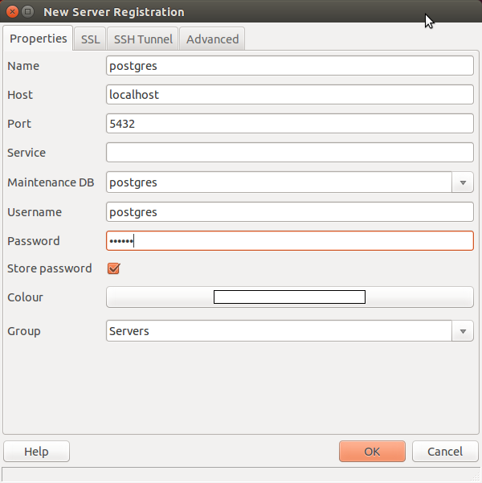
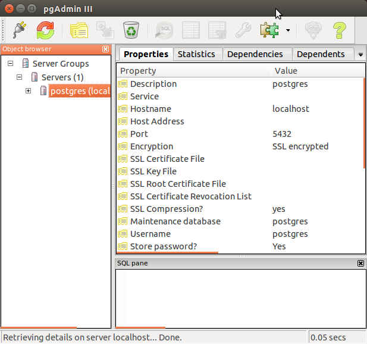

DevOps / Sys Admin Q & A #8 : Database
We'll install MySQL server on Ubuntu 14.04:
$ sudo apt-get install mysql-server
MySQL will bind to localhost (127.0.0.1) by default.
Open up the MySQL shell:
$ mysql -u root -p
Create a new database called mydb1:
mysql> CREATE DATABASE mydb1;
Listing data bases:
mysql> show databases; +--------------------+ | Database | +--------------------+ | information_schema | | mydb1 | | mysql | | performance_schema | +--------------------+ 4 rows in set (0.00 sec)
Switch to "mydb1":
mysql> use mydb1; Database changed
The table creation command requires:
- Name of the table
- Names of fields
- Definitions for each field
Let's create two tables Orders and Customers:
mysql> CREATE TABLE Orders(
-> OrderID INT NOT NULL AUTO_INCREMENT,
-> CustomerID INT NOT NULL,
-> OrderDate INT NOT NULL,
-> PRIMARY KEY(OrderID)
-> );
Query OK, 0 rows affected (0.05 sec)
mysql> CREATE TABLE Customers(
-> CustomerID INT NOT NULL AUTO_INCREMENT,
-> CustomerName VARCHAR(30) NOT NULL,
-> ContactName VARCHAR(10) NOT NULL,
-> Country VARCHAR(10) NOT NULL,
-> PRIMARY KEY(CustomerID)
-> );
Query OK, 0 rows affected (0.05 sec)
Field Attribute NOT NULL is being used because we do not want this field to be NULL. So if user will try to create a record with NULL value, then MySQL will raise an error.
The AUTO_INCREMENT tells MySQL to go ahead and add the next available number to the id field.
Keyword PRIMARY KEY is used to define a column as primary key.
We will use SQL INSERT INTO command to insert data into MySQL table Orders. and create 3 records into Orders table:
mysql> INSERT INTO Orders
-> (OrderID, CustomerID, OrderDate)
-> VALUES
-> (334, 19, 1810);
Query OK, 1 row affected (0.03 sec)
mysql> INSERT INTO Orders
-> (OrderID, CustomerID, OrderDate)
-> VALUES
-> (308, 2, 1990);
Query OK, 1 row affected (0.04 sec)
mysql> INSERT INTO Orders
-> (OrderID, CustomerID, OrderDate)
-> VALUES
-> (409, 27, 2001);
Query OK, 1 row affected (0.04 sec)
For the table Customers:
mysql> INSERT INTO Customers
-> (CustomerID, CustomerName, ContactName, Country)
-> VALUES
-> (1, "John Chambers", "JC", "US");
Query OK, 1 row affected (0.05 sec)
mysql> INSERT INTO Customers
-> (CustomerID, CustomerName, ContactName, Country)
-> VALUES
-> (2, "Ana Pushkova", "AP", "Russia");
Query OK, 1 row affected (0.04 sec)
mysql> INSERT INTO Customers
-> (CustomerID, CustomerName, ContactName, Country)
-> VALUES
-> (3, "Antonio Jussepe", "AJ", "Italy");
Query OK, 1 row affected (0.02 sec)
Let's check what we've created:
mysql> show tables; +-----------------+ | Tables_in_mydb1 | +-----------------+ | Customers | | Orders | +-----------------+ 2 rows in set (0.00 sec) mysql> select * from Orders; +---------+------------+-----------+ | OrderID | CustomerID | OrderDate | +---------+------------+-----------+ | 308 | 2 | 1990 | | 334 | 19 | 1810 | | 409 | 27 | 2001 | +---------+------------+-----------+ 3 rows in set (0.01 sec) mysql> select * from Customers; +------------+-----------------+-------------+---------+ | CustomerID | CustomerName | ContactName | Country | +------------+-----------------+-------------+---------+ | 1 | John Chambers | JC | US | | 2 | Ana Pushkova | AP | Russia | | 3 | Antonio Jussepe | AJ | Italy | +------------+-----------------+-------------+---------+ 3 rows in set (0.00 sec)
The most frequently used clause is INNER JOIN. This produces a set of records which match in both the Orders and Customers tables, i.e. all customers who put orders:
mysql> select Orders.OrderID, Customers.CustomerName, Orders.OrderDate
-> FROM Orders
-> JOIN Customers
-> ON Orders.CustomerID=Customers.CustomerID;
+---------+--------------+-----------+
| OrderID | CustomerName | OrderDate |
+---------+--------------+-----------+
| 308 | Ana Pushkova | 1990 |
+---------+--------------+-----------+
1 row in set (0.00 sec)
For other types of joins, visit SQL Inner, Left, Right, and Outer Joins
To add a new user to MySQL, we just need to add a new entry to user table in database mysql.
The following SQL query is an example of adding new user bogo with SELECT, INSERT and UPDATE privileges with the password bogo123:
$ mysql -u root -p
Enter password:
Welcome to the MySQL monitor. Commands end with ; or \g.
Your MySQL connection id is 44
Server version: 5.5.46-0ubuntu0.14.04.2 (Ubuntu)
Copyright (c) 2000, 2015, Oracle and/or its affiliates. All rights reserved.
Oracle is a registered trademark of Oracle Corporation and/or its
affiliates. Other names may be trademarks of their respective
owners.
Type 'help;' or '\h' for help. Type '\c' to clear the current input statement.
mysql> use mysql;
Reading table information for completion of table and column names
You can turn off this feature to get a quicker startup with -A
Database changed
mysql> INSERT INTO user
-> (host, user, password,
-> select_priv, insert_priv, update_priv)
-> VALUES
-> ('localhost', 'bogo', PASSWORD('bogo123'), 'Y', 'Y', 'Y');
Query OK, 1 row affected, 3 warnings (0.00 sec)
mysql> FLUSH PRIVILEGES;
Query OK, 0 rows affected (0.00 sec)
mysql> SELECT host, user, password FROM user WHERE user = 'bogo';
+-----------+------+-------------------------------------------+
| host | user | password |
+-----------+------+-------------------------------------------+
| localhost | bogo | *E9E4A154D883528614456AF69209AB76D8C52E5F |
+-----------+------+-------------------------------------------+
1 row in set (0.00 sec)
When we add a new user, and as we can see in the above example the password is encrypted to *E9E4A154D883528614456AF69209AB76D8C52E5F.
Notice the FLUSH PRIVILEGES statement which tells the server to reload the grant tables. If we don't use it, then we won't be able to connect to mysql using the new user account without rebooting the server.
Note also we specified some privileges to a new user by setting the values of following columns in user table to 'Y' when executing the INSERT query or we can update them later using UPDATE query.
Another way of adding user account is by using GRANT SQL command.
The example below will add user bogotobogo with password bogotobogo123 for a particular database called mydb1.
mysql> use mysql;
Reading table information for completion of table and column names
You can turn off this feature to get a quicker startup with -A
Database changed
mysql> GRANT SELECT,INSERT,UPDATE,DELETE,CREATE,DROP
-> ON mydb1
-> TO 'bogotobogo'@'localhost'
-> IDENTIFIED BY 'bogotobogo123';
Query OK, 0 rows affected (0.00 sec)
It will create an entry in mysql database table called user:
mysql> select host, user from user; +------------------+------------------+ | host | user | +------------------+------------------+ | 127.0.0.1 | root | | ::1 | root | | ip-172-31-25-188 | root | | localhost | bogo | | localhost | bogotobogo | | localhost | debian-sys-maint | | localhost | root | +------------------+------------------+ 7 rows in set (0.00 sec)
By default, it will have the following entries:
[client] port = 3306 socket = /var/run/mysqld/mysqld.sock [mysqld] user = mysql pid-file = /var/run/mysqld/mysqld.pid socket = /var/run/mysqld/mysqld.sock port = 3306 basedir = /usr datadir = /var/lib/mysql log_error = /var/log/mysql/error.log
We can remotely access our databases using SSH. To create a Tunnel with mysql-tunnel on Linux we use the command like this:
ssh -L [local port]:[database host]:[remote port] [username]@[remote host]
- [local port]
The local port our database tool connects to.
If we have a MySQL installation on our local machine, it runs on port 3306 by default; therefore, we don't want to use 3306 for the local port. For example, use 3307 instead.
If we have a PostgreSQL installation on our local machine, it runs on port 5432 by default; therefore, we don't want to use 5432 for the local port. For example, use 5433 instead.
- [database host]
The hostname or IP address of the database instance that we are tunneling to.
If the [remote host] is the database instance we will want to set this to 127.0.0.1 (so it refers to itself).
If we used an application instance as [remote host] then we can use the value of "host:" from our database.yml instead.
-
[remote port]
The port that our remote database listens for connections on.
For MySQL databases, this is 3306 by default.
For PostgreSQL database, this is 5432 by default.
- [username]
The user for the database instance.
-
[remote host]
The remote instance our tunnel will connect to the database through.
This can be the database instance itself, or any instance within the database environment.
To backup mydb1:
$ mysqldump -u root -p mydb1 > mydb1dump.sql
This command will backup the 'mydb1' database into a file called 'mydb1dump.sql' which will contain all the SQL statements needed to re-create the database.
To import a database, we need to create a new blank database in the MySQL shell to serve as a destination for our data:
mysql> create database mydb2; Query OK, 1 row affected (0.00 sec) mysql> show databases; +--------------------+ | Database | +--------------------+ | information_schema | | mydb1 | | mydb2 | | mysql | | performance_schema | +--------------------+ 5 rows in set (0.00 sec)
Now, we can restore our 'mydb1dump.sql' file to the 'mydb2' database:
$ mysql -u root -p mydb2 < mydb1dump.sql
Back to mysql shell, and see if it's restored:
mysql> use mydb2; Reading table information for completion of table and column names You can turn off this feature to get a quicker startup with -A Database changed mysql> show tables; +-----------------+ | Tables_in_mydb2 | +-----------------+ | Customers | | Orders | +-----------------+ 2 rows in set (0.00 sec)
Yes, the two tables (Customers and Orders) have been restored in mydb2!
- Database statistics
Statistics contain information about the distribution of values in a particular index or columns of a table.UPDATE STATISTICS
- Create optimized indexes
SQL optimizer depends on indexes defined for a particular table.
Indexes are double-edged sword:
no index will degrade performance of our SELECT statements and too many indexes will slow down our DML (INSERT, UPDATE, and DELETE) queries. Therefore, it is important to have a right balance of index on tables.
Besides the number of indexes, fields that are involved and their order is also very important. - Avoid functions on RHS of the operator
- Predetermine expected growth - FILL FACTOR
- Specify optimizer hints in SELECT
- Use EXPLAIN
- Avoid foreign key constraints
- Two heads are better than one - multiple physical disks
- Select limited data
- Drop indexes before loading data
Consider dropping the indexes on a table before loading a large batch of data. This makes the insert statement run faster. Once the inserts are completed, we can recreate the index again.
refs:
Top 10 performance tuning tips for relational databases
Indexes allow the database application to find data fast since with index it doesn't have to read the whole table.
Updating a table with indexes takes more time than updating a table without (because the indexes also need an update). So we should only create indexes on columns (and tables) that will be frequently searched against.
Let's create a sample table:
mysql> CREATE TABLE Customers(
-> ID INT NOT NULL AUTO_INCREMENT,
-> FirstName VARCHAR(30) NOT NULL,
-> LastName VARCHAR(30) NOT NULL,
-> PRIMARY KEY(ID)
-> );
mysql> INSERT INTO Customers
-> (ID, FirstName, LastName)
-> VALUES
-> (11, "Bob", "Harris");
Query OK, 1 row affected (0.07 sec)
mysql> INSERT INTO Customers
-> (ID, FirstName, LastName)
-> VALUES
-> (65, "Janet", "Smith");
Query OK, 1 row affected (0.07 sec)
mysql> INSERT INTO Customers
-> (ID, FirstName, LastName)
-> VALUES
-> (32, "Allison", "James");
Query OK, 1 row affected (0.09 sec)
mysql> INSERT INTO Customers
-> (ID, FirstName, LastName)
-> VALUES
-> (72, "Jack", "Ashley");
Query OK, 1 row affected (0.06 sec)
mysql> INSERT INTO Customers
-> (ID, FirstName, LastName)
-> VALUES
-> (58, "Fred", "Lee");
Query OK, 1 row affected (0.05 sec)
Now, we have the following table:
mysql> select * from Customers; +----+-----------+----------+ | ID | FirstName | LastName | +----+-----------+----------+ | 11 | Bob | Harris | | 32 | Allison | James | | 58 | Fred | Lee | | 65 | Janet | Smith | | 72 | Jack | Ashley | +----+-----------+----------+ 5 rows in set (0.00 sec)
Let's create index on our Customers table:
mysql> CREATE INDEX CIndex
-> ON Customers (LastName);
The users cannot see the indexes, they are just used to speed up queries and will be used by Database Search Engine to locate records very fast.
We can use SHOW INDEX command to list out all the indexes associated with a table. Note that we used Vertical-format output (specified by \G) to avoid long line wraparound:
mysql> show index from Customers\G
*************************** 1. row ***************************
Table: Customers
Non_unique: 0
Key_name: PRIMARY
Seq_in_index: 1
Column_name: ID
Collation: A
Cardinality: 2
Sub_part: NULL
Packed: NULL
Null:
Index_type: BTREE
Comment:
Index_comment:
*************************** 2. row ***************************
Table: Customers
Non_unique: 1
Key_name: CIndex
Seq_in_index: 1
Column_name: LastName
Collation: A
Cardinality: 5
Sub_part: NULL
Packed: NULL
Null:
Index_type: BTREE
Comment:
Index_comment:
2 rows in set (0.00 sec)
When should index be created?
- Only on columns that are frequently used in the WHERE clause.
- Only on columns that contain a high number of unique values (high cardinality).
When should index be avoided?
- Small tables.
- Column values are not highly unique (Female/Male, etc.)
- Column that are frequently updated.
PostgreSQL is a standards-compliant and has many advanced features like reliable transactions and concurrency without read locks.
In this section, we'll install Postgres package and a "contrib" package that adds some additional utilities and functionality on Ubuntu 14.04.
$ sudo apt-get install postgresql postgresql-contrib
The installation creates a user account called postgres that is associated with the default Postgres role. Let's log into our account:
k@laptop:~$ sudo -i -u postgres postgres@laptop:~$
Note that we have a shell prompt for the postgres user.
We can get a Postgres prompt immediately by typing psql:
postgres@laptop:~$ psql psql (9.3.9) Type "help" for help. postgres=#
We can do it at one shot:
k@laptop:~$ sudo -u postgres psql psql (9.3.9) Type "help" for help. postgres=#
Now we are able to interact with the database.
We are going to create a new role and we want to exit out of the PostgreSQL prompt:
postgres=# \q postgres@laptop:~$
Then, we'll be back in the postgres prompt.
Let's create a database called bogotobogo:
postgres@laptop:~$ createdb bogotobogo
PostgreSQL command line executable createdb is a wrapper around the SQL command CREATE DATABASE:
k@laptop:~$ sudo -i -u postgres postgres@laptop:~$ psql psql (9.3.9) Type "help" for help. postgres=# create database testdb; CREATE DATABASE
We can check available database list using \l:
k@laptop:/etc$ sudo -i -u postgres k@laptop:~$ psql psql (9.3.9) Type "help" for help. postgres=# \conninfo You are connected to database "postgres" as user "postgres" via socket in "/var/run/postgresql" at port "5432".
We can check available database list using \l:
postgres=# \l
List of databases
Name | Owner | Encoding | Collate | Ctype | Access privileges
------------+----------+----------+-------------+-------------+-----------------------
bogotobogo | postgres | UTF8 | en_US.UTF-8 | en_US.UTF-8 |
postgres | postgres | UTF8 | en_US.UTF-8 | en_US.UTF-8 |
template0 | postgres | UTF8 | en_US.UTF-8 | en_US.UTF-8 | =c/postgres +
| | | | | postgres=CTc/postgres
template1 | postgres | UTF8 | en_US.UTF-8 | en_US.UTF-8 | =c/postgres +
| | | | | postgres=CTc/postgres
test1 | postgres | UTF8 | en_US.UTF-8 | en_US.UTF-8 |
testdb | postgres | UTF8 | en_US.UTF-8 | en_US.UTF-8 |
(6 rows)
Now, type the command below to connect/select a desired database, here we will connect to the test1 database:
postgres=# \c test1 You are now connected to database "test1" as user "postgres". test1=# \c postgres You are now connected to database "postgres" as user "postgres".
We need to set the password of the PostgreSQL user (role) called "postgres", otherwise we will not be able to access the server externally. As the local "postgres" Linux user, we are allowed to connect and manipulate the server using the psql command.
In a terminal, type:
$ sudo -u postgres psql postgres
this connects as a role with same name as the local user, i.e. "bogotobogo", to the database called "postgres" (1st argument to psql).
Set a password for the "postgres" database role using the command, and give our password when prompted. The password text will be hidden from the console for security purposes. :
k@laptop:~$ sudo -u postgres psql postgres psql (9.3.9) Type "help" for help. postgres=# \password postgres Enter new password: Enter it again:
Type Control+D or \q to exit the posgreSQL prompt.
PgAdmin is a web application that provides a GUI interface for the postgresql system.
$ sudo apt-get install pgadmin3
On a command line, type in pgadmin3:

DevOps
DevOps / Sys Admin Q & A
Linux - system, cmds & shell programming
- Linux Tips - links, vmstats, rsync
- Linux Tips 2 - ctrl a, curl r, tail -f, umask
- Linux - bash I
- Linux - bash II
- Linux - Uncompressing 7z file
- Linux - sed I (substitution: sed 's///', sed -i)
- Linux - sed II (file spacing, numbering, text conversion and substitution)
- Linux - sed III (selective printing of certain lines, selective definition of certain lines)
- Linux - 7 File types : Regular, Directory, Block file, Character device file, Pipe file, Symbolic link file, and Socket file
- Linux shell programming - introduction
- Linux shell programming - variables (readonly, unset)
- Linux shell programming - special shell variables
- Linux shell programming : arrays - three different ways of declaring arrays & looping with $*/$@
- Linux shell programming : operations on array
- Linux shell programming : variables & commands substitution
- Linux shell programming : metacharacters & quotes
- Linux shell programming : input/output redirection & here document
- Linux shell programming : loop control - for, while, break, and break n
- Linux shell programming : for-loop
- Linux shell programming : if/elif/else/fi
- Managing User Account - useradd, usermod, and userdel
- Linux Secure Shell (SSH) I : key generation, private key and public key
- Linux Secure Shell (SSH) II : ssh-agent & scp
- Linux Secure Shell (SSH) III : SSH Tunnel as Proxy - Dynamic Port Forwarding (SOCKS Proxy)
- Linux Secure Shell (SSH) IV : Local port forwarding (outgoing ssh tunnel)
- Linux Secure Shell (SSH) V : Reverse SSH Tunnel (remote port forwarding / incoming ssh tunnel) /)
- Linux Processes and Signals
- Linux Drivers 1
- tcpdump
- Linux Debugging using gdb
- Embedded Systems Programming I - Introduction
- Embedded Systems Programming II - gcc ARM Toolchain and Simple Code on Ubuntu/Fedora
- LXC (Linux Container) Install and Run
- Hadoop - 1. Setting up on Ubuntu for Single-Node Cluster
- Hadoop - 2. Runing on Ubuntu for Single-Node Cluster
- ownCloud 7 install
- Ubuntu 14.04 guest on Mac OSX host using VirtualBox I
- Ubuntu 14.04 guest on Mac OSX host using VirtualBox II
- Windows 8 guest on Mac OSX host using VirtualBox I
- Ubuntu Package Management System (apt-get vs dpkg)
- How to Make a Self-Signed SSL Certificate
- DevOps / Sys Admin interview questions
Ph.D. / Golden Gate Ave, San Francisco / Seoul National Univ / Carnegie Mellon / UC Berkeley / DevOps / Deep Learning / Visualization